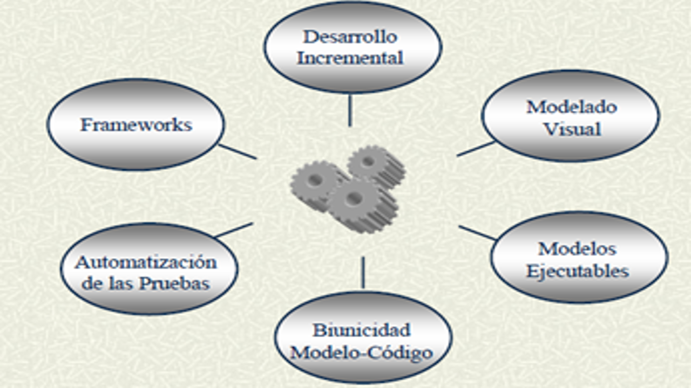

|
|
|
|  |
MODELO VISUAL: facilita la capacidad de apreciar los diferentes elementos e interacciones del sistema en los diferentes niveles de abstracción.
MODELOS EJECUTABLES: La mejor gestión de los errores que inevitablemente se introducen a lo largo del proceso de desarrollo consiste en detectarlos y corregirlos tan pronto como se comentan. Para que esto se pueda realzar eficientemente conviene tener capacidad de realizar las pruebas directamente desde los modelos, mediente debbuger a nivel de modelo o mediante la generación automática de prototipos que los hagan ejecutables
RELACION BIUNIVOCA ENTRE MODELOS Y CODIGOS: el proceso de desarrollo de las aplicaciones se basa en modelos que se desarrollan para que los diseños sean comprensibles y gestionables, en codigo que es el producto final y es necesario que ambos se mantengan en todas las fases sintonizados.
AUTOMATIZACION DE LAS PRUEBAS A PARTIR DE LAS ESPECIFICACIONES: el número de prueba que hay que realizar para detectar errores se incrementa de forma acumulativa, como consecuencia de que no solo hay que verificar los nuevos elementos sino su interferencia con lo ya probado.
FRAMEWORKS:son aplicaciones parcialmente desarrolladas que se utilizan como plantillas para el desarrollo de nuevas aplicaciones.
DESARROLLO INCREMENTAL E ITERATIVO: los sistemas de desarrollo deben basarse en la generación iterativas de prototipos utilizables que vyan aumenando gradualmente su funcionalidad en las sucesivas etaps hasta conseguir que sea plena